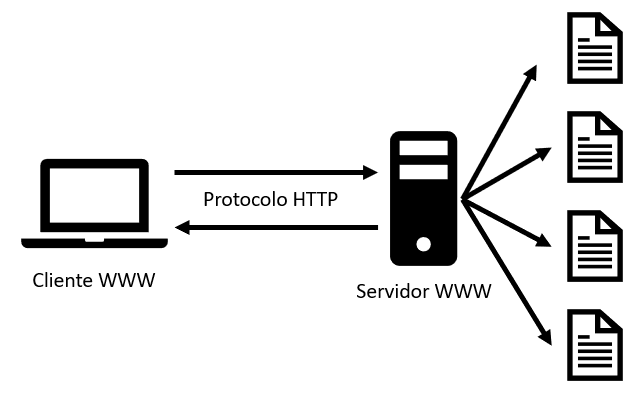

HTTP está montado sobre el protocolo TCP (Protocolo de Control de Transmisión), que es un protocolo orientado a la conexión y confiable.
Clientes HTTP: Navegadores web (Chrome, Firefox, Safari) y herramientas como cURL.
Servidores HTTP: Apache, Nginx, Microsoft IIS.
Los verbos (métodos) más comunes son:
Datos de formularios (en métodos POST o PUT).
Archivos subidos (upload).
Cualquier otro tipo de datos en formato texto o binario.
URI (Uniform Resource Identifier): Identificador único de un recurso.
URL (Uniform Resource Locator): Subconjunto de URI que especifica la ubicación y el método para acceder al recurso (ej: http://ejemplo.com/recurso).
El recurso completo incluido el protocolo que se está usando y el nombre del servidor al cual estoy queriendo acceder, en cambio el URI es parte del URL, es el recurso dentro de este host remoto.
Cookies: Pequeños datos enviados por el servidor y almacenados en el cliente.
Headers: Metadatos como Cache-Control, ETag, o Last-Modified para manejar caché.
Se refiere al uso de conexiones TCP persistentes (keep-alive) en HTTP/1.1, donde múltiples solicitudes/respuestas se realizan sobre una misma conexión TCP, evitando el overhead de establecer y cerrar conexiones repetidamente.
El asincronismo del HTTP permite generar nuevos recursos asincrónicamente cuando ya cargó todo antes.
Capacidad de alojar múltiples dominios en un mismo servidor con una única IP, usando el campo Host en los headers para diferenciarlos.
Mecanismo de caché donde el servidor asigna un identificador único (ETag) a cada recurso. El cliente envía este ETag en futuras solicitudes (If-None-Match), y el servidor responde 304 Not Modified si el recurso no ha cambiado.
Porque cada solicitud HTTP es independiente y no mantiene información sobre solicitudes anteriores. Esto significa que el servidor no almacena el estado del cliente entre diferentes solicitudes.
HTTP es stateless (sin estado) porque cada solicitud (request) es independiente: el servidor no guarda información entre interacciones. Cada petición debe contener todos los datos necesarios para ser procesada, sin depender de solicitudes anteriores.
Imagenes sobre el protocolo HTTP
